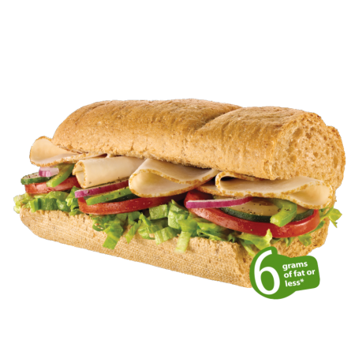

services
- Catering
- Online Ordering
- Loyalty Program for Customers called Subway Club
- Make your own sub
- Nutritional Guide
You can know exactly what you are eating at Subway® Restaurants and to help you make a healthier choice; they have created this interactive menu. You just have to simply select your favorite Sub, Side or individual ingredient and view its nutritional breakdown. You can customize your selected sub with your choice of bread, sauces and salads and the data will be automatically updated.
- Franchise Business